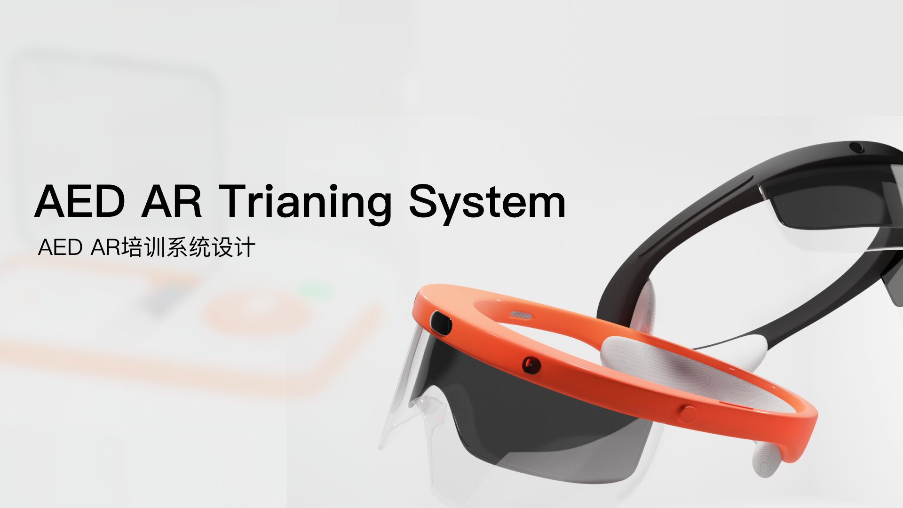
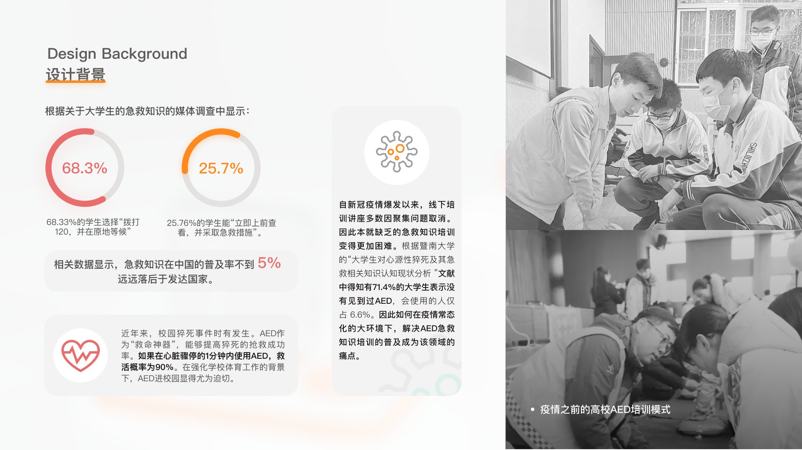
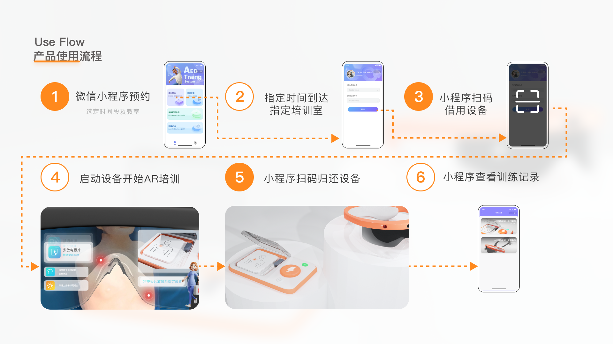

AED AR Training System
AED 除颤仪 AR 培训系统设计 · 浙江大学
心脏骤停的 1 分钟内若使用 AED，存活率可高达 90%。但中国急救知识普及率不到 5% — 大多数人在关键时刻"知道有 AED"，却"不敢上手用"。 这套 AR 培训系统设计，希望让 AED 真正从"装在墙上的设备"变成"普通人也敢按下的工具"。
数据来自暨南大学《大学生对心源性猝死及其急救相关知识认知现状分析》及相关媒体调查。
设备已就位 · 人却没准备好
校园猝死事件时有发生，AED 进校园势在必行。但仅靠"装上墙"远远不够 — 真正的瓶颈在于"会用的人"太少。

认知误区
调查显示 68.3% 的学生在心脏骤停现场会选择"拨打 120 并原地等候"，而不是立即施救 — 错过了存活率最高的黄金 1 分钟。
培训困局
疫情常态化后，线下集中培训多被取消，学生缺少接触 AED 的真实机会。靠图文 / 视频学习的知识无法转化为现场行动力。
让"敢上手"成为肌肉记忆
用 AR 还原心脏骤停现场，让学习者在真实压力下做出反应。
小程序预约 + 扫码借用，把 AED 培训嵌入校园日常生活。
培训记录、考核数据沉淀，让"上过课"变成可见的能力。
六步闭环 · 让训练像借书一样简单
从微信小程序预约，到 AR 设备实战训练，再到训练记录回看 — 所有环节为校园场景而设计。

把 AED 的每一步 · 浮在你眼前
空间引导
AR 在真实环境中标记 AED 摆放位置、电极片粘贴部位，把"知道在哪"变成"看得见在哪"。
分步操作提示
每一步操作（开机 / 贴电极 / 远离 / 按下放电）都在视野中浮动提示，按对了打勾，按错了即时反馈。
情境化压力
AR 还原"人晕倒在地"的真实场景，配合心率倒计时音效，让学员在真实压力下做决策，把知识转化为肌肉记忆。
不要让 AED 只是"挂在墙上的好心"
每一台贴在墙上的 AED，都是社会善意的物理化。但善意如果没有"会用的人"在场，它就只是一台没人敢按的盒子。
我希望这套系统能把 AED 从"硬件部署"推进到"行为改变"。当一个人学过、上手过、被肌肉记忆托住过 — 那一刻他不会再是路过的人。这是 AR 真正的意义：让虚拟的演练，变成现实的勇气。
DIA 中国智造设计大赛 · 佳作奖
DIA（中国设计智造大奖）由中国美术学院发起，是面向全球的高规格工业 / 数字设计奖项。本作品由浙江大学独立提交，获得 2022 年度佳作奖。
在 DIA 官网查看获奖记录"硬件 + 软件 + 服务"
这是我第一次完整跑通一个"硬件 + 数字产品 + 服务设计"协同的项目。它让我意识到：真正影响行为的是体验链路，不是单一产品。
这种"系统级设计观"，后来一直影响我做 AIGC 产品时的思考方式。